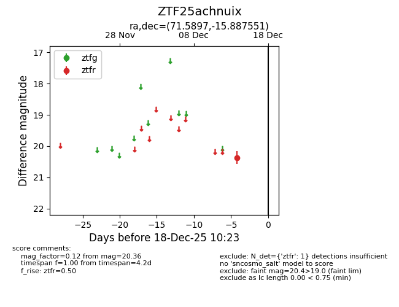
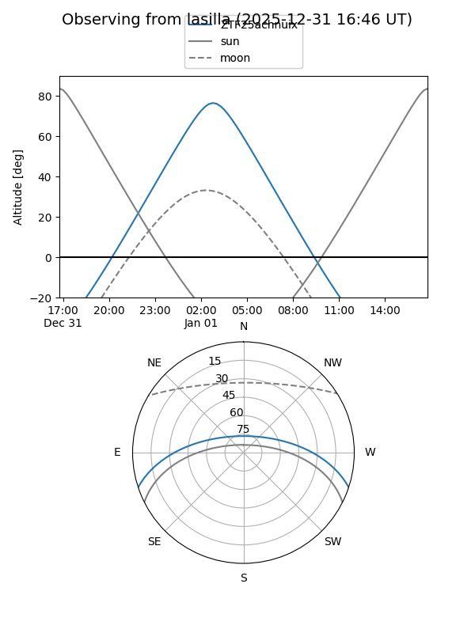
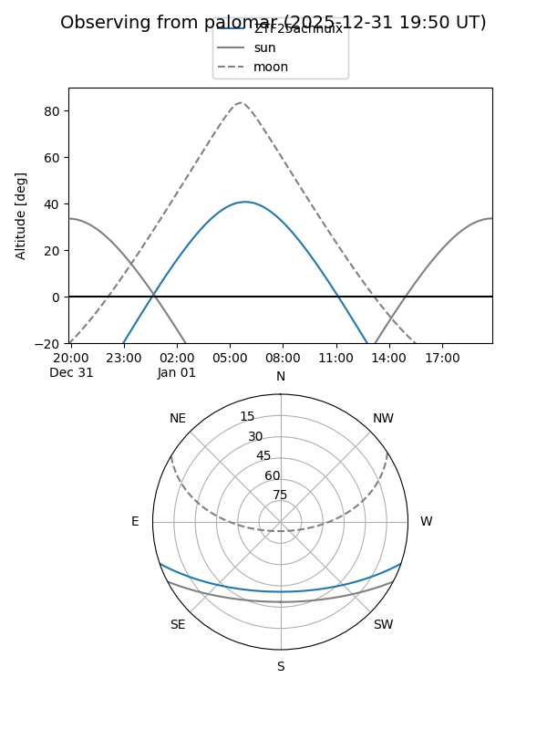

ZTF25achnuix
Target ZTF25achnuix at 2025-12-18 11:18
Aliases and brokers:
FINK: fink-portal.org/ZTF25achnuix
Lasair: lasair-ztf.lsst.ac.uk/objects/ZTF25achnuix
ALeRCE: alerce.online/object/ZTF25achnuix
alt names
ZTF25achnuix (ztf,fink_ztf)
Coordinates:
equatorial (ra, dec) = 71.5897,-15.88755
equatorial (HMS+DMS) = 04:46:21.52,-15:53:15.18
galactic (l, b) = (214.0461,-34.69057)
Photometry
last ztfr=20.36
1 ztfr detections
Lightcurve

Visibility


Additional plots